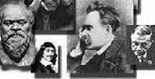

<html>
<head>
<title>Comenzar</title>
<style>
body {
    background-image: url("filo.jpg");
	background-repeat:no-repeat;
	background-size: cover;
	background-attachment: fixed;
</style>
<style type="text/css">
			* {
				margin:0px;
				padding:0px;
			}
			
			#header {
				margin:left;
				width:10000px;
				font-family: sans-serif;
			}
			
			ul, ol {
				list-style:none;
			}
			
			.nav > li {
				float:left;
			}
			
			.nav li a {
				background-color:#5d4037;
				color:yellow;
				text-decoration:none;
				padding:10px 12px;
				display:block;
			}
			
			.nav li a:hover {
				background-color:#757575;
			}
			
			.nav li ul {
				display:none;
				position:absolute;
				min-width:140px;
			}
			
			.nav li:hover > ul {
				display:block;
			}
			
			.nav li ul li {
				position:relative;
			}
			
			.nav li ul li ul {
				right:-140px;
				top:0px;
			}
			
		</style>
	</head>
		<body background-image:url('imagenes/007.jpg';>
	</body>
	
		<div id="header">
		
		<ul class="nav">
				<li><a href="">Desarrollada por</a>
				    <ul>
				        <li><a href="">Carlos Rafael Pendini</a>
						   <ul>
					       <li><a herf="">Jubilado de profesión Ingeniero Agrónomo. Entusiasta lector de temas filosóficos. Aprendiz. Vive en Ciudad de Córdoba. Argentina</a>
						   
						   
						</ul>
						</li>
						</ul>
						</li>
					<li><a href="">Información del sitio</a>
					<ul>
						<li><a href="">"<p>Esta es una página desarrollada para aquellos interesados, en la lectura de temas filosóficos.</p> <p>Tiene como proposito poner a disposición de los visitantes, materiales que se encuentran</p> disponibles en internet y que aquí se pueden visualizar en forma ordenada y de fácil acceso".</a>
               </ul>
                </li>						
					<li><a href="">Filósofos</a>
					<ul>
						<li><a href="">Aristóteles</a>
						<ul>
						<li><a href="https://es.wikipedia.org/wiki/Arist%C3%B3teles">Biografía</a>
								<li><a href="">Obras</a>
							<ul>
							    <li><a href="Etica-a-Nicomaco-Aristoteles-PDF.pdf">Ética a Nicómaco</a></li>
								<li><a href="Metafisica Aristoteles.pdf">Metafísica</a>
								<li><a href="Politica-Aristoteles.pdf">Política</a>
							</ul>
						   </li>	
						   </UL>
						   </li>
				    <li><a href="">Agamben Giorgio</a>
					<ul>
						   <li><a href="https://es.wikipedia.org/wiki/Giorgio_Agamben">Biografía</a>
						   <li><a href="">Obras</a>
					<Ul>
							    <li><a href="AGAMBEN Giorgio - Gusto.pdf"><FONT COLOR="RED">Gusto</FONT COLOR"RED"></a>
								<li><a href="agamben-giorgio-homo-sacer-vol-i.pdf">Homo sacer</a>
								<li><a href="El_Reino_y_la_Gloria.pdf">El reino y la gloria</a>
							    <li><a href="la_potencia_del_pensamiento_de_giorgio_agamben.pdf">La potencia del pensamiento</a>
								<li><a href="Agamben Giorgio - Estado de excepción - Adriana Hidalgo.pdf">El estado de excepción</a>
								<li><a href="Agamben_Giorgio_El_Hombre_sin_Contenido.pdf">El hombre sin contenido</a>
							</ul>
						   </li>	
						   </UL>
						   </LI>
						   <li><a href="">Alemán Jorge</a>
						   <ul>
						   <li><a href="https://es.wikipedia.org/wiki/Jorge_Alem%C3%A1n">Biografía</a>
								<li><a href="">Obras</a>
								<Ul>
							    <li><a href="16109-Texto%20do%20artigo-39333-2-10-20130731.pdf">Antifilosofía e izquierda lacaniana</a>
								<li><a href="dnnc586noArNBR76HHp4r1w6vC8dDjea8AHm4nFl.pdf">Diferencia entre sujeto y subjetividad</a>
							    <li><a href="NOTAS_ANTIFILOSOFICAS.pdf">Notas antifilosóficas</a>
								<li><a href=""></a>
								<li><a href=""></a>
							</ul>
						   </li>	
						   </UL>
						   </LI>
						   <li><a href="">Arendt Hannah</a>
						   <ul>
						   <li><a href="https://es.wikipedia.org/wiki/Hannah_Arendt">Biografía</a>
								<li><a href="">Obras</a>
								<Ul>
							    <li><a href="Arendt_Hannah_Entre_El_Pasado_Y_El_Futur.pdf">Entre el pasado y el futuro</a>
								<li><a href="Arendt_LaPromesaDeLaPolitica.pdf">La promesa de la política</a>
								<li><a href="la-condicion-humana-hannah-arendt.pdf">La condición humana</a>
							    <li><a href="Responsabilidad_y_Juicio">Responsabilidad y juicio</a>
						</ul>
						   </li>	
						   </UL>
						   </LI>
						   <li><a href="">Bobbio Norberto</a>
						   <ul>
						   <li><a href="https://es.wikipedia.org/wiki/Norberto_Bobbio">Biografía</a>
								<li><a href="">Obras</a>
								<Ul>
							    <li><a href="norberto_bobbio_de_la_razon_de_estado_al_gobierno_democratico.pdf">De la pasión de estado al gobierno democrático</a>
								<li><a href="Norberto-Bobbio.pdf">El filósofo y la política</a>
								<li><a href="Bobbio - Igualdad y libertad.pdf">Igualdad y libertad</a>
							    <li><a href="doc.pub_bobbio-sociedad-y-estado-en-la-filosofia-moderna.pdf">Sociedad y estado en la política moderna</a>
								<li><a href="141-Bobbio, Norberto - Thomas Hobbes  IMPRIMIR EN AHORROOO.pdf">Thomas Hobbes</a>
								<li><a href=""></a>
							</ul>
						   </li>	
						   </UL>
						   </LI>
						   <li><a href="">Borges José l</a>
						   <ul>
						   <li><a href="https://es.wikipedia.org/wiki/Jorge_Luis_Borges">Biografía</a>
								<li><a href="">Obras</a>
								<Ul>
								<li><a href="BorgesObrasCompletasI.pdf">Obras completas I</a>
							    <li><a href="BorgesObrasCompletasII.pdf">Obras completas II</a>
								</ul>
						   </li>	
						   </UL>
						   </LI>
						   <li><a href="">Bauman Zigmunt</a>
						   <ul>
						   <li><a href="https://es.wikipedia.org/wiki/Zygmunt_Bauman">Biografía</a>
								<li><a href="">Obras</a>
								<Ul>
							    <li><a href="modernidad-liquida-bauman.pdf">Modernidad líquida</a>
								<li><a href="Bauman%20Zygmunt%20-%20Vidas%20desperdiciadas%20-%20La%20modernidad%20y%20sus%20parias.pdf">Vidas desperdiciadas</a>
								<li><a href="Los_retos_de_la_educacion_en_la_modernid.pdf">Los retos de la educación en la modernidad</a>
							    <li><a href="Estado_de_crisis_Zygmunt_Bauman.pdf">Estado de crisis</a>
								<li><a href="">5</a>
								<li><a href="">6</a>
							</ul>
						   </li>	
						   </UL>
						   </LI>
						   <li><a href="DERRIDA.html">Derrida Jack</a>
						   </LI>
						   <li><a href="foulcaut.html">Foulcaut Michell</a>
						   </li>
						   <li><a href="SPINOZA.html">Spinoza Baruch</a>
						   						   </LI>
						   <li><a href="nietzsche.html">Nietzsche Friedrich</a>
						   </LI>
						   <li><a href="Hume.html">Hume David</a></li>
						   <li><a href="vattimo.html">Vattimo Gianni</a></li>
						   <li><a href="berardi.html">Berardi Franco</a></li>
						   <li><a href="rousseau.html">Rousseau Jean Jacques</a></li>
						   <li><a href="ricouer.html">Ricouer Paul</a></li>
						   <li><a href="tatian.html">Tatian Diego</a></li>
						   <li><a href="nancy.html">Nancy Jean Luc</a></li>
						   <li><a href="butler.html">Butler Judith</a></li>
						   <li><a href="levinas.html">Levinas Emmanuel</a></li>
						   <li><a href="negri.html">Negri Antonio</a></li>
						   <li><a href="LAZZARATO.html">Lazzaratto Mauricio</a></li>
						   <li><a href="">Platon</a>
						    <ul>
							    <li><a href="https://es.wikipedia.org/wiki/Plat%C3%B3n">Biografía</a></li>
								<li><a href="">obras</a>
						    	
						   </ul>
						   </li>
						        <li><a href="">Socrates</a>
								<ul>
								<li><a href="https://es.wikipedia.org/wiki/S%C3%B3crates">Biografía</a></li>
								<li><a href="">Obras</a></li>
						   </ul>
						   </li>
						        <li><a href="">Descartes</a>
							<ul>
								<li><a href="https://es.wikipedia.org/wiki/Ren%C3%A9_Descartes">Biografía</a></li>
								<li><a href="">Obras</a></li>
							</ul>
						</li>
					</ul>
				</li>
		    	<li><a href="">Novedades</a>
					<ul>
						<li><a href="">LECTURAS AGREGADAS(NUEVAS)</a></li>
						<li><a href="dokumen.tips_filosofia-de-la-desercion-peter-pl-pelbart">Filosofía de la deserción. Peter Pál Pelbart</a></li>
						<li><a href="6969-20353-1-PB.pdf">Para una redefinición del neoliberalismo desde una genealogía colonial. Emiliano Sacchi</a></li>
						<li><a href="Levinas_Emmanuel_La_huella_del_otro_2001_compressed.pdf">La huella del otro. Emmanuel Levinas</a></li>
						<li><a href="Modulo_I_Torralba_Los_Maestros_de_la_Sos.pdf">Los maestros de la sospecha. Francesc Torralba</a></li>
						<li><a href="la-esencia-del-cristianismo.pdf">La esencia del cristianismo. Ludwid Feuerbach
						<li><a href="3BARANZELLI.PDF">Los diálogos de Hume</a></li>
						<li><a href="Dialogos_sobre_religion_natural.pdf">Diálogos sobre religion natural.Hume</a></li>
						<li><a href="dialogos-sobre-la-religion-naturalpdf_compress.pdf">Diálogos sobre religión natural Hume</a></li>
						<li><a href="Spinoza - Etica.pdf">Etica. Spinoza</a></li>
						<li><a href="En Medio de Spinoza. Gilles Deleuze.pdf">En medio de Spinoza. Deluze</a></li>
						<li><a href="Selecciones del Tratado Teológico Político de Spinoza - Taller de Filosofía .pdf">Selecciones del Tratado teológico-político, de Baruch Spinoza</a></li>			
						
						
					</ul>
				</li>
				<li><a href="">Videos</a>
				<ul>
				 <li><a href=https://www.youtube.com/watch?v=kJ8kT0-_fk8">Presentación libro Idiologias. Aleman J.</a>
				 <li><a href="https://www.youtube.com/embed/UXDXLYANF5E" title="YouTube video player" frameborder="0" allow="accelerometer; autoplay; clipboard-write; encrypted-media; gyroscope; picture-in-picture; web-share" allowfullscreen></iframe">La cuestión de la ideología. Aleman J</a>
								<li><a href="https://www.youtube.com/playlist?list=PL8ZfEptaIREfWPnlhXH2VpvgyYxR-cYEq">Filosofía aquí y ahora. Feinmann José P </a>
								<li><a href="https://www.youtube.com/watch?v=9UGcF72tHAg&list=PLS7zo1ycVQfkBZ6LzVPpCgZqkbK3Xzshw">Darío Sztajnszrajber. Clases Universidad Libre</a>
							    <li><a href="https://www.youtube.com/watch?v=1ep_OcxPYGg">Alejandro Dolina con Darío Sztajnszrajber </a>
								<li><a href="https://www.youtube.com/watch?v=wOjHYzRuNBU">Spinoza por Diego Tatian</a>
								<li><a href="https://www.youtube.com/watch?v=AlQof12AGz0&pp=ygUbdW5pdmVyc2lkYWQgbGlicmUgZmlsb3NvZmlh">Subjetividad y poder. Esther Diaz</a>
								<li><a href="https://www.youtube.com/watch?v=pd48SfUMy1U&list=PLdg7I4L3LiDVSACywEQpTp844ck4KrBCm">Los maestros del pensamiento. Abraham Tómas</a>								
								<li><a href="https://www.youtube.com/watch?v=RHJH35jPJ3w">Heidegger | Por Darío Sztajnszrajber</a>
								<li><a href="https://www.youtube.com/watch?v=T3fNklArb6Q">Judith Butler - Cuerpos que todavía importan</a>
								<li><a href="https://www.youtube.com/watch?v=ZeRJ4pympuM">Creando capacidades - Martha Nussbaum</a>
								<li><a href="https://www.youtube.com/watch?v=EpoiGzmm8RA">La ira y su contrario Martha Nussbaum</a>
								<li><a href="https://www.youtube.com/playlist?list=PL-UaTZnN7ciWEYYrcQDViMrWsdS1OabWL">Filosofía- Filósofos Canal A</a>
								<li><a href="https://www.youtube.com/watch?app=desktop&v=dPT74lDz3dg">Los desafíos de la democracia en el siglo XXI</a>
								<li><a href="https://www.facultadlibre.org/filosofia-8-libros-dario-sztajnszrajber">Filosofía en 8 libros. Dario Sztajnszrajber</a>
								<li><a href="https://www.youtube.com/watch?v=gJ5UQKDeNLM&list=PLGDZQYren6SUOm-enfe5KgRmgpyxi8vFE&index=1">Historia de la filosofía. Universidad libre</a>
								<li><a href="https://www.youtube.com/playlist?list=PL9aTN4Co7wslLspZEJ5_6ILibD5B6fRy4">Curso sobre David Hume</a>
								<li><a href=""></a>
								<li><a href=""></a>
								<li><a href=""></a>
								<li><a href=""></a>
								<li><a href=""></a>
							</ul>
						   </li>	
						   		
			               <li><a href="">Mis textos</a>
				           <ul>
						   <li><a href="Que es la filosofía.pdf">¿Qué es la filosofía?</a>
				           <li><a href="Aristoteles la felicidad.pdf">Aristoteles, la filosofía, la felicidad y YO</a>
						   <li><a href="la idea de una vida buena en medio de una mala vida CP.pdf">La idea de una vida buena, interpretando a Judith Butler</a>
								<li><a href="Afirmar que no es cierto.pdf">La filosofía, dios y yo</a>
								<li><a href="Interpretando a spinoza.pdf">Interpretando a Spinoza</a>
								<li><a href="Por esas cosas de la vida.pdf">Por esas cosas de la vida</a>
								<li><a href=""></a>
								<li><a href=""></a>
								<li><a href=""></a>
								<li><a href=""></a>
								<li><a href=""></a>
				 </ul>
				 </li>
				 <li><a href="https://es.wikipedia.org/wiki/Anexo:Cronolog%C3%ADa_de_fil%C3%B3sofos_occidentales">Biografias</a>
				 <li><a href="SITIOS.html">Sitios de interes</a>
				 <li><a href="biblio.htm">Biblioteca</a>
		</div>
	</body><br><br>

<body>
<style>
body {
    background-color: #d7ccc8 ;
}
h1 {
    background-color: green;
}
h2 {
    background-color: #5d4037;
}
p {
    background-color: #5d4037;
}
</style><br>
<center>
     <TEXT><h1><p style="color:white"><mark style="background-color: #3e2723; color: white;">"LECTURAS FILOSOFICAS PARA NO FILOSOFOS"</h1></dark>
	
	<TEXT><em><h1><em><p style="color:white"><font: arial><mark style="background-color: #3e2723; color: white;">LA FILOSOFIA UN CAMINO DE BUSQUEDA</h1>
	<text><h2><em><strong><p style="color:white">"LA FILOSOFIA"    &#160;&#160;&#160;&#160;&#160;&#160; "LA PREGUNTA"</h2></em></strong></dark></em>
	
	
	<h4><p style="color: yellow">**LA INTENCION DEL AUTOR ES LA DIFUSION DE LA FILOSOFIA.</center></h3> br><br>
		      
			        &#160;&#160;&#160;&#160;&#160;&#160;&#160;&#160;&#160;&#160;&#160;&#160;&#160;&#160;&#160;&#160;&#160;&#160;&#160;&#160;&#160;&#160;&#160;&#160;&#160;&#160;&#160;&#160;&#160;&#160;&#160;&#160;&#160;&#160;&#160;&#160;&#160;&#160;&#160;&#160;&#160;&#160;&#160;&#160;&#160;&#160;&#160;&#160
			  &#160;&#160;&#160;&#160;&#160;&#160;&#160;&#160;&#160;&#160;&#160;&#160;&#160;&#160;&#160;&#160;&#160;&#160;&#160;&#160;&#160;&#160;&#160;&#160;&#160;&#160;&#160;&#160;&#160;&#160;&#160;&#160;&#160;&#160;&#160;&#160;
			  			  
						  <h3><CENTER><a href="index.html"p style="color:yellow"><mark style="background-color: #3e2723; color: white;"><em><STRONG>IR A INICIO</a></h3>
						  
			  
            <div style='text-align:right'">
		  
		  
		  
		  
		  
		  
		  
		  
		  
		  
		  
		  
		  </html>